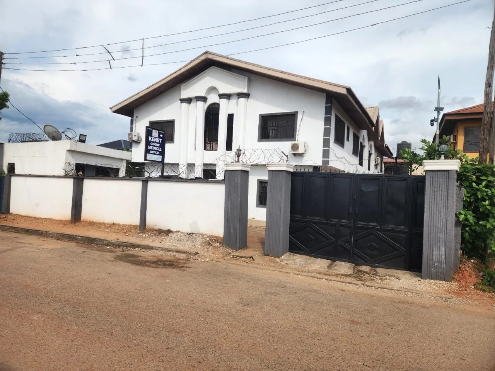
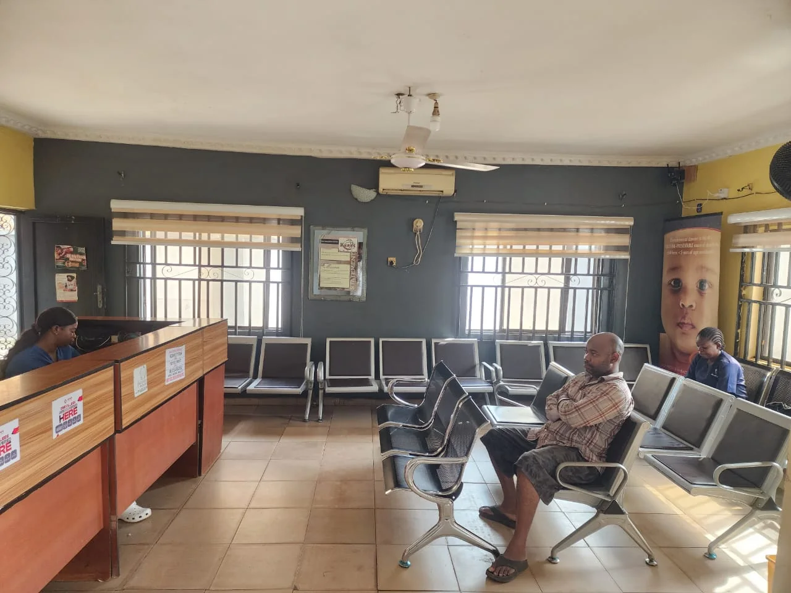

Emergency & inpatient care
24-hour accident and emergency response, stabilisation before referral, admission, observation and nursing care.
Request care
Healthcare in Asaba, Nigeria
Accessible, quality and affordable medical care for individuals, families and organisations—supported by a multidisciplinary team.

About Kenet Group
Kenet Group Medical Service Limited is a private healthcare provider in Asaba focused on accessible, quality and affordable care.
Our multidisciplinary team brings medical, nursing, diagnostic, pharmacy, administrative and support services together to care for patients across every stage of their visit.
Appropriately trained, dedicated and approachable professionals.
Timely emergency response capacity and round-the-clock care.
Ready access to information while protecting patient privacy.
Our services
From routine consultations to 24-hour support, our services help patients access care in one coordinated setting.
24-hour accident and emergency response, stabilisation before referral, admission, observation and nursing care.
Request careAntenatal, delivery and postnatal care, alongside family planning support.
Request careChild welfare clinics, immunisation and treatment of childhood illnesses.
Request careGeneral consultations and care for common illnesses and long-term conditions.
Request careLaboratory testing, basic scans, diagnostic referrals and in-house dispensing.
Request careHealth checks, staff medicals, pre-employment screening and HMO partnerships.
Request careTelemedicineFollow-up and consultation for existing patients.
Health educationCounselling on nutrition, maternal health and chronic disease management.
Professional trainingFirst Aid, CPR and health worker refresher training.
Your visit
We help you move from first contact to the right clinical team and a clear next step.
Send an appointment request or visit us for urgent care.
Our team assesses your needs and coordinates the appropriate service.
Receive treatment, follow-up guidance or referral when required.
Our facilities
Take a closer look at the spaces where our team receives, assesses and cares for patients.
Our leadership
Our directors bring clinical and organisational expertise to the hospital’s work.
Director · Paediatrician
Director · Obstetrician & Gynaecologist
Director · Tax Consultant
To be the best and preferred healthcare provider for the health needs of the population we serve.
Our visionOur mission
We work to optimise the health of our clients through competent people, fit-for-purpose equipment, timely response, committed management and responsible access to information.
Learn about Kenet GroupAppointments
Tell us the service you need and your preferred contact method. This form prepares a request on your device without transmitting sensitive medical information.
Visit the hospital for 24-hour accident and emergency assessment. Do not use this form for emergencies.
Patient information
Practical information about accessing care at Kenet Group Medical Service Limited.
Yes. Accident and emergency assessment, stabilisation before referral, inpatient admission, observation and nursing care are available 24 hours.
Telemedicine follow-up and consultation are available for existing patients. Contact arrangements must be confirmed with the hospital.
The hospital provides laboratory tests and basic scans, with referral or partner arrangements for X-rays and more advanced investigations.
Yes. Services include staff medicals, pre-employment screening and HMO partnerships. Patients and organisations should confirm current arrangements before visiting.
No. Do not enter sensitive medical information online. Share clinical details directly with an authorised member of the care team.
Contact us
Asaba, Delta State
Nigeria
Request a consultation
Prepare your request using the form aboveOpen 24 hours
Visit the hospital for urgent assessment